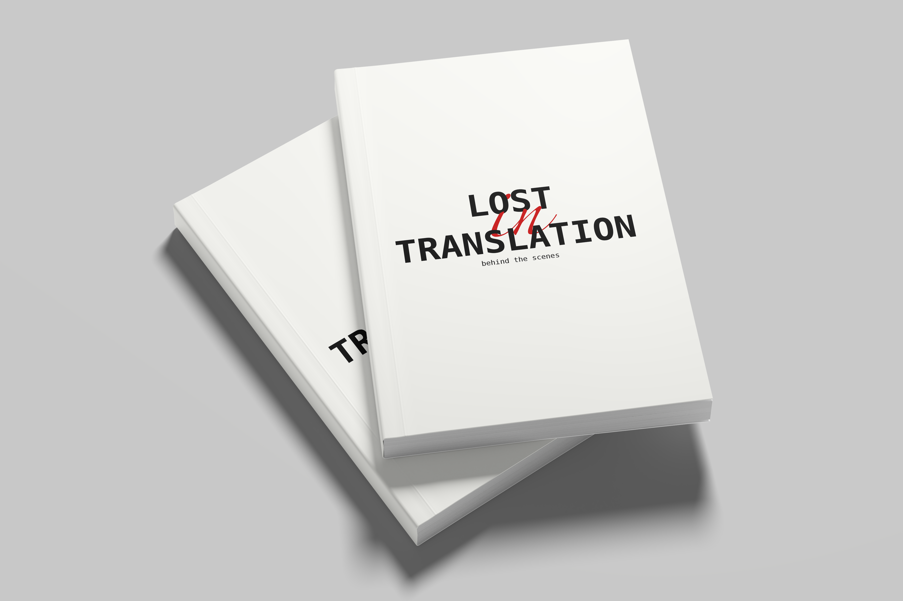

Print & Editorial · 06
Book Design
Book Cover
Some things
exist only in
the space between
languages.
Lost in Translation explores the untranslatable — those words from other languages that describe feelings English cannot name. The book becomes both dictionary and portrait.
Typeset in a double-column grid, the layout pairs foreign headwords with full-spread imagery, letting negative space carry the emotion the text describes.
Typographic System
Each spread is designed at print resolution. The text block sits within a classical 9:5 page proportion — generous outer margin, tight gutter, breathing room at the head.